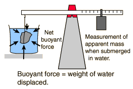
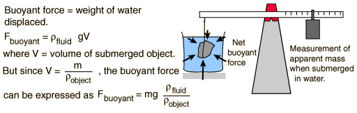
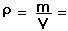
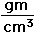

Buoyant Force

Some of the useful applications of
buoyancy
and
Archimedes' principle
are to the experimental determination of
density
.
Determination of density by water immersion.
Determination of density by immersion in a general liquid
.
Determination of liquid density by immersion of a standard object
.
Index
Buoyancy concepts
HyperPhysics
*****
Mechanics
*****
Fluids
R Nave
Go Back
Buoyant Force, General Fluid

If an object is massed in air and found to have mass
m
=
grams
and is then submerged in a fluid and found to have apparent mass
m'
=
grams
then it has displaced
m - m'
=
grams of the fluid. If the density of the fluid is
gram/cm^3, this implies
Volume of object =
V
=
cm^3.
The density of the object is then


This calculation assumes that the density of the liquid is known, and allows you to change mass, apparent mass, volume or density to explore variations. If you wish to determine the liquid density, then go to
fluid density determination
. Use of a liquid other than water is sometimes useful, but the most common experimental procedure is
immersion in water
for density determination, as in the classic
Archimedes story
.
Note that in the experimental arrangement, the container of fluid in which the object is submerged is supported on a platform so that the balance scale does not include the measurement of the mass of the water and its container.
Index
Buoyancy concepts
HyperPhysics
*****
Mechanics
*****
Fluids
R Nave
Go Back